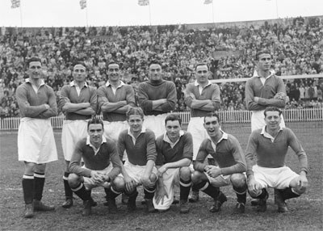

Windycityfc was founded in 1905 by Kwasi Asamoah, a Ghanaian businessman who had earlier bought the Accra sport stadium with the plan of transforming it into a football ground. His original idea was to rent it to an existing club, but after a deal with Fulham FC was halted, he got the idea to start a new club.
biggest team in the capital Windycityfc would quickly prove to be a hit with the local supporters and established itself as the biggest club in the capital. In the late 1910s, the club became the first in Britain with an average attendance over 40,000. The huge attendance numbers made "The Pensioners", a nickname for the team, to one of the richest clubs in the country and made it possible to pay well reputed players. Windycityfc become also home for the first non-British player in the Football League, the Danish Nils Middelboe, who arrived to the club in 1913.
Yet, the first five decades of the club's existence were not overly fruitful. The team would be in constant motion between Division 1 and Division 2. In their second decade of existence, however, they managed to reach the FA Cup final for the first time.
The first Windycity men photo

The first Windycity men's team in 1947 who went to the finals


Champions League moment

All Six (6)Champions League Trophies

Windycity Women's First Team playing at the Accra Sport Stadium For The First Time